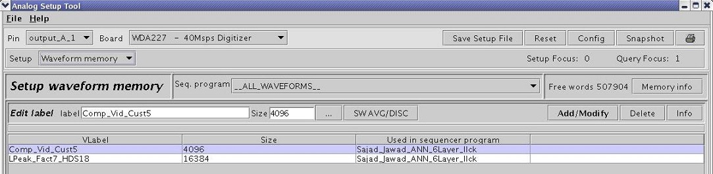

Waveform Memory
Modern testing techniques are strongly focused on the strategy of maximizing the number of DUT test parameters that can be extracted from the minimum number of tests. Composite signals no doubt play a major role towards accomplishing this goal. The degree of sophistication needed in testers translates into a flexible approach for designing the test stimuli that can be applied to the DUT. The SmarTest software achieves total flexibility without added complexity by providing a fast local waveform memory within each Analog Module. The Waveform Memory mode of the Analog Setup Tool provides you with the means for managing this local memory.
Comprehensive tests can involve many test signals composed using numerical data representing different waveforms. Multi-parameter tests in particular including the so called "single -pass" or "One-Go" can involve a sequential arrangement of composite waveforms and the "Sequence Memory" part of this Tool dealt with the construction and management of that aspect.
The Waveform Memory part of the Setup Tool allows you to track the usage and to examine and manage the partitioning of the waveform memory.
The Waveform Memory setup is identical for all Analog Modules. Only the size of the waveform memory varies from module to module.
To activate this part of the Analog Setup Tool you need to select "Waveform Memory" from the pull-down menu provided at the Setup field.
Once activated the screen shown in the figure below appears.

The entire waveform memory is physically located within the Analog Module. Its purpose is to handle data locally at speed that is appropriate to the operational speed of the Analog Module. In the case of digitizers, the Waveform Memory stores the captured waveforms at a speed that matches the digitizer sampling rate.
The "Setup Waveform Memory" screen is split into two sections:
- The control part at the top of the working area containing two lines of entry fields as well as various control buttons which will be discussed in sections that will follow.
- The Waveform table providing a list of waveform labels, their size and usage.